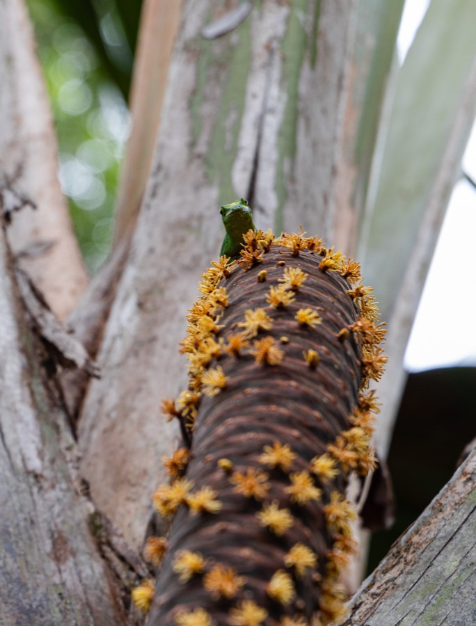
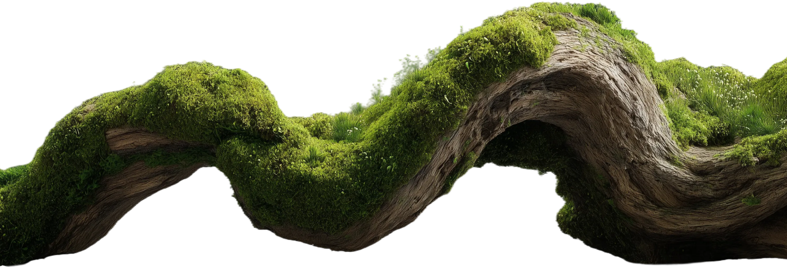

Coco de Mer
The Garden of Eden
Over 600 years ago, explorers believed the Vallée de Mai on Praslin was the Garden of Eden, the only place on earth where the Coco de Mer grows wild.
The Coco de Mer grows wild in only one place on earth: the forests of Seychelles. Our Coco de Mer comes from the jungles of Praslin and Curieuse, home to the legendary Vallée de Mai.
More than 600 years ago, explorers believed the Vallée de Mai was the original Garden of Eden. Today the forest is protected by UNESCO, and the collection of nuts from the wild is strictly monitored by the Seychelles Government.
Legend
Two lovers, two trees
Two gods who stole the song of creation were turned into two trees on Praslin, bound together forever. Their song still drifts on the breeze as a fragrance.
Long before time, the supreme one sang the world into being, and his song became a shell of a thousand colours. A nymph of the sea learnt its song and carved lagoons, bays and cliffs. The earth keeper fell in love with her, and together they sang of mountains, volcanoes and coral atolls.
When the supreme one discovered they had stolen the power of creation, the lovers fled to the oldest sacred forest. Moved by all they had made, he could not destroy them. The garden was carried across the seas to become an island, and the two gods became two trees, bound together forever on Praslin. Their song still drifts on the breeze as a fragrance.
Founders
Silvana & Patrick Bonne
It began with a love story in the late 80s. Together we built a distillery making 100% raw, wild essential oils from rare Seychelles plants.
Like all the most important things in life, it started with a love story. In the late 80s Silvana embarked on a daring adventure in the Seychelles, where she met Patrick. After a period in Italy, where our daughter Sharon was born, we moved our dental practice to the islands.
Patrick knew all the hidden gems of the Seychelles, including its rare and indigenous plants. Together we began making 100% raw, wild essential oils, some not produced in over 200 years. Our curiosity turned to the Coco de Mer, and after years of research we created the first cosmetics in Seychelles made with real Coco de Mer extract.
Atelier
Est. 1999 · Au Cap, Mahé
A historic cinnamon kiln turned Island Scent Distillery, where we discovered the captivating fragrance hidden in the husk of the Coco de Mer.
In 1999, we transformed a historic cinnamon kiln at Turtle Bay, Au Cap, into the Island Scent Distillery. There we began producing essential oils from some of the Seychelles' most treasured plants: cinnamon bark and leaf, takamaka seed, lemongrass, geranium and patchouli.
It was here that we made an exciting discovery: the husk of the Coco de Mer released a unique and captivating fragrance. It led to the first perfumes in Seychelles made with the scent of Coco de Mer, and every one of them is still made by hand in our atelier.
Palm
Lodoicea maldivica
The largest seed on earth, up to 40 kg, from a palm that lives 800 years. Protected by UNESCO and listed as endangered by the IUCN.
Lodoicea maldivica is the most unique palm in the world. Its seed, the largest on earth, can be half a metre long and weigh up to 40 kg. The tree grows 40 metres tall, lives for 800 years and must grow for 20 to 40 years before it flowers.
There are male and female trees: the female bears the famous nut, while the male grows a long catkin covered in aromatic yellow flowers. The Coco de Mer is listed as endangered by the IUCN. Every nut we use is obtained legally through the Seychelles Islands Foundation and the Seychelles National Parks Authority.
Purpose
Sustainability Seychelles Award 2025
A solar-powered atelier, zero-waste extraction, and packaging with less than 0.01% plastic.
We are honoured to have received the Sustainability Seychelles Award 2025 for our eco-friendly business practices.
Our atelier runs on 80% clean energy from solar panels, and every product is made by hand. No Coco de Mer is ever harvested: we collect them naturally, only once they fall from the tree, and we use every part of the nut. Our packaging is glass, recyclable metal and cardboard, with less than 0.01% plastic.
Rooted in
the forest
Every Coco de Mer we use is legally sourced and collected naturally, only once it falls from the tree. Nothing is harvested, and every part of the nut is used.
↗Shop the Nut
Zero waste, from husk to bottle.

Our story
From a love story to the rarest perfume on Earth
The Garden of Eden
Explorers believed the Vallée de Mai on Praslin, home of the Coco de Mer, was the original Garden of Eden.
A treasure for emperors
A Coco de Mer ewer is made for the collection of Emperor Rudolf II, showing how prized the nut already was.
A love story begins
Our founder Silvana arrives in the Seychelles and meets Patrick. After a period in Italy, where our daughter Sharon is born, we return to the islands.
The Island Scent Distillery
We transform a historic cinnamon kiln at Turtle Bay, Au Cap, into a distillery producing raw, wild essential oils from Seychelles plants.
Bringing the Coco de Mer to the world
At a time when it was almost unknown outside Seychelles, we begin exporting Coco de Mer to international markets.
The scent in the husk
In our distillery we discover that the husk of the Coco de Mer releases a captivating fragrance. With the Universities of Pisa and Florence and master perfumers, it becomes the first Coco de Mer perfume.
Five energies of the legend
Fanm, Zonm, Lodas, Coco de Mer Oud and Sovaz, each handmade in our atelier and inspired by the legend.
Sustainability Seychelles Award
We are recognised for our eco-friendly practices: a solar-powered atelier, zero-waste extraction and packaging with less than 0.01% plastic.
The story continues
Our research goes on, exploring new ways to use this remarkable gift of nature in fragrance, cosmetics and food.